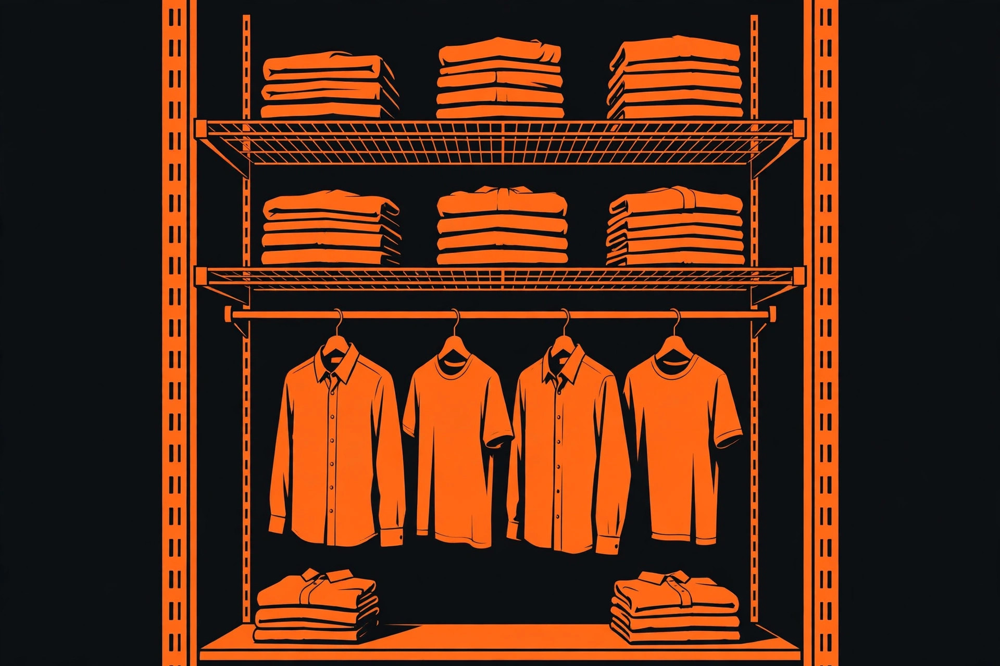

Closet shelving systems: wire, wood, and track systems compared

A closet shelving system is a bigger commitment than a single shelf. Once the standards, tracks, or cleats are on the wall, the layout tends to stay for years — and a layout chosen for the wrong clothes, the wrong wall, or the wrong load is annoying every single morning. The good news is that the choice narrows quickly once it is framed properly. Almost every residential system falls into one of three families: fixed-mount wire, adjustable track wire, and wood or melamine panels on cleats or in a framed unit. This guide compares those three families using verified manufacturer specifications, then walks through the measuring and planning procedure that should happen before any box is opened.
The three system types, side by side
| System type | How it mounts | Adjustability | Best for | Watch out for |
|---|---|---|---|---|
| Fixed-mount wire | Back clips, wall brackets, and support brackets screwed to the wall | None once installed; shelves are cut to length | The lowest-cost way to add a shelf-and-rod run | Re-spacing means new holes; hangers can catch on supports |
| Adjustable track wire (e.g. ClosetMaid ShelfTrack) | A horizontal hang track carries vertical standards; brackets slot into the standards | Shelves and rods move up and down the standards without new holes | Closets whose contents change — kids, seasons, changing wardrobes | Strength depends entirely on standard spacing and stud or anchor quality |
| Wood / melamine panels | Cleats screwed across studs, or a framed tower unit | Fixed unless built on adjustable standards | A built-in look, flat surfaces for folded stacks, heavier point loads | More cutting and finishing work; heavier to install; harder to change later |
None of the three is universally best. Fixed wire is honest, cheap storage. Adjustable track costs more in hardware but buys back flexibility every time the contents change. Wood and melamine read as furniture rather than hardware, and a flat board does not leave wire lines pressed into folded knitwear. The forum arguments about closet systems usually turn out to be arguments about this trade: in a long-running Fine Homebuilding discussion, one poster rejected wire rack systems as expensive and not strong enough for their use and preferred plywood or MDF shelves on cleats, while other posters planned built-in shelves on fixed increments and were happy with them. Both positions make sense — for different closets and different loads.
What the manufacturer specs actually say
This is the part most buying guides skip, and it is the part that decides whether a wire system feels solid or springy. ClosetMaid's own installation instructions for its track systems state the structural rules plainly:
- Standards spaced no more than 24 inches apart, and no more than 4 inches from the end of the shelf. Closer spacing makes a stronger installation.
- Drywall: drill 1/2-inch holes and secure with toggle bolts. Studs: secure with #12 x 2-inch pan head screws at stud locations. Concrete: drill 1/4-inch holes, insert #12 wall anchors, and secure with #12 x 2-inch screws.
- Shelf & Rod shelving uses 12-inch brackets, and wire shelving is cut to length with a bolt cutter or a hacksaw.
Those numbers are a spec check any buyer can run before purchasing: count the standards in the kit, divide the closet width by the gaps, and confirm no span exceeds 24 inches and no shelf end cantilevers more than 4 inches past the last standard. A kit stretched across a wider closet than it was designed for fails this check on paper, before it fails on the wall.
Capacity claims need the same treatment. ClosetMaid's 2 ft. to 4 ft. ShelfTrack organizer kit is rated by the manufacturer to hold up to 275 lbs, offers approximately 104 inches of hanging space, and organizes up to 40 folded clothes, with shelving 12 inches deep in vinyl-coated steel. The larger 6–8 ft. ShelfTrack kit measures 96 inches wide, 85.5 inches high, and 12 inches deep assembled, in steel with three shelves and an adjustable rod. Treat a kit rating as a rating for the whole properly installed system — not a per-shelf promise, and not a number that survives widening the standard spacing beyond the instructions.
Hardware adds up, too, which is worth knowing before choosing track over fixed mounting. A single ShelfTrack wire shelving bracket was listed at $6.65 at Home by AMES, checked 2026-10-13. That is a small number per bracket, but a two-wall adjustable layout can use a dozen or more brackets plus standards and track, so price the full parts list for your layout rather than the headline kit price.
Depth and spacing that fit real clothes
The ShelfTrack kits above use 12-inch-deep shelving, and 12 inches is a workable depth for folded clothes and a shelf-and-rod run in a reach-in closet. It is not generous. Hangers themselves need more room than the shelf is deep: a hanger swings on the rod below the shelf, and in the Fine Homebuilding discussion a poster working with a tight 60-inch closet noted that hanging clothing needs at least 21 inches of clear depth — a reminder that door swing, door tracks, and the wall return all eat into the nominal closet depth.
Vertical spacing is the other quiet failure. Guidance for linen and folded storage puts useful shelf spacing at roughly 12 to 16 inches, with linen shelves typically 12 to 16 inches deep. Builders often frame fixed shelves 18 to 24 inches apart, which wastes the gap above an 8- or 9-inch stack of folded towels every day for the life of the closet. That waste is the strongest practical argument for adjustable standards: shelf positions can be set to the stacks you actually own, and re-set when the stacks change. Where fixed boards must stay, a freestanding riser on a shelf divides one over-tall gap into two usable tiers without any fastening. Reserve the highest shelf — typically above 72 inches — for off-season and rarely used items, since everything up there is reached on a step stool.
A decision framework: renters, adjusters, and heavy loads
Work through three questions, in this order:
- Can you drill, and will you need to undo it? Every system here fastens to the wall, but a single hang track concentrates its holes along one level line, which is the easiest pattern to patch later. Fixed-mount wire spreads clips and brackets over the whole wall. If holes are not allowed at all, no wall system qualifies — use a freestanding unit inside the closet instead, and accept the depth it consumes.
- Will the contents change within two years? If yes, choose adjustable track. Moving a bracket in a slotted standard takes seconds and no tools beyond lifting the shelf; moving a fixed shelf means patching and re-drilling. Growing children, a planned nursery conversion, or seasonal wardrobe swaps all count as change.
- What is the heaviest realistic load? Folded denim, books stored in a closet, and tool bins are heavy in a way shirts are not. Compare your estimate honestly against the kit's whole-system rating — the 275 lb figure for the small ShelfTrack kit above — and keep standard spacing at or under the 24-inch maximum. Heavy, concentrated loads are where flat wood shelves on stud-secured cleats earn their extra work.
If two answers point different ways, prioritize the load answer. An adjustable system installed within its spacing and capacity specs is safe and merely imperfect; an overloaded one is a failure waiting for a quiet night.
Measure and plan before you buy: a numbered procedure
- Empty one wall of the closet and measure its width at two heights; walls are rarely perfectly parallel, so plan to the smaller number.
- Measure the closet's clear depth from the back wall to the closed door or door track, and confirm at least roughly 21 inches where clothes will hang.
- Find and mark every stud on the wall with a stud finder, and mark the marks again at the height the hang track or cleats will sit.
- Inventory what the wall must hold: linear inches of hanging clothes, number and height of folded stacks, and any bins — with the tallest stack measured, not guessed.
- Sketch the layout with shelf spacing of roughly 12 to 16 inches for folded goods, a long-hang section with clear space beneath it, and the top shelf reserved for seasonal items.
- Run the spec check: lay out standard positions so no span exceeds 24 inches and no shelf end extends more than 4 inches past a standard; confirm at least some standards land on studs, and plan toggle bolts where they cannot.
- Price the complete parts list — kit, extra standards, brackets, end caps for cut wire ends, and anchors — before ordering, using current listings.
What success looks like: the sketch's shelf positions match the measured stacks with no gap larger than about 16 inches, every standard in the layout is 24 inches or less from its neighbour, hanging clothes clear the door when it closes, and the parts list fits the budget with the anchors your wall type actually requires — all before a single hole is drilled.
Common mistakes
Stretching a kit past its designed width is the most common one, and the spacing check above catches it. The rest are familiar: choosing shelf depth from the product name instead of the clear depth of the closet; fixing shelf heights before measuring the stacks; putting the heaviest storage on the top shelf because it fits, rather than low where it belongs; and skipping end caps on cut wire shelves, leaving sharp cut ends against clothing — ClosetMaid's instructions call for caps on cut ends for exactly this reason. Finally, do not mix components across brands on a load-bearing run and assume the ratings carry over; ClosetMaid's own warranty terms state that combining its products with third-party components voids the manufacturer's warranty.
FAQ
Is 12-inch-deep shelving enough for a clothes closet? For folded clothes and a standard shelf-and-rod run, yes — the major ShelfTrack kits are built around 12-inch shelving. For bulky bins or deep storage boxes, it will feel shallow, and a deeper wood shelf is the better tool.
Can wire shelving be cut to fit? Yes. ClosetMaid's instructions specify a bolt cutter or hacksaw for wire shelving, a pipe cutter (recommended) or hacksaw for closet rods, and a hacksaw for hang tracks — plus end caps on the cut ends.
How much weight can a closet kit hold? Only the manufacturer's figure for that kit, installed as directed. The 2–4 ft. ShelfTrack kit is rated at 275 lbs for the system. Wider spacing or missed anchors reduce what the real installation can carry.
The short version
Pick the family first — fixed wire for cheap and simple, adjustable track for closets that change, wood or melamine for a built-in look and heavy flat loads. Then verify the install specs (standards within 24 inches, ends within 4 inches, the right fasteners for your wall), measure the clothes before fixing shelf heights, and price the whole parts list. A closet system chosen that way stops being a compromise you live around and becomes storage that fits.
Related: installing shelves that stay up — studs, anchors, and level installs →